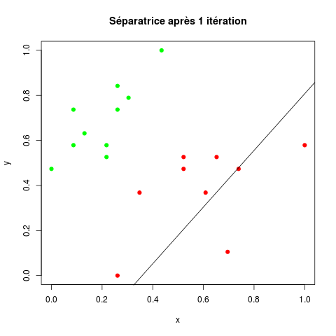
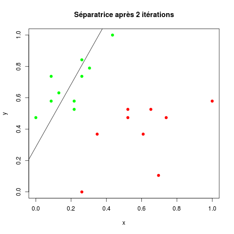
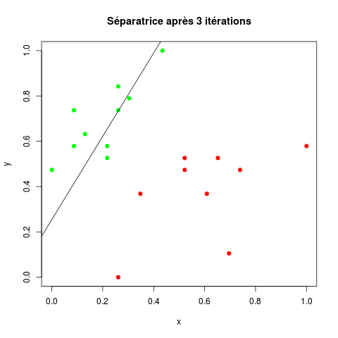
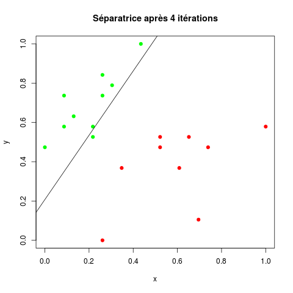
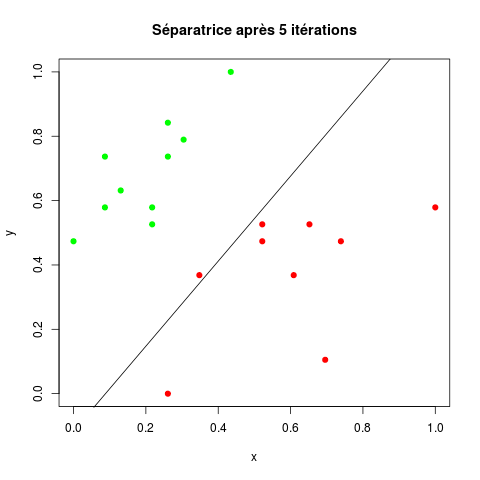
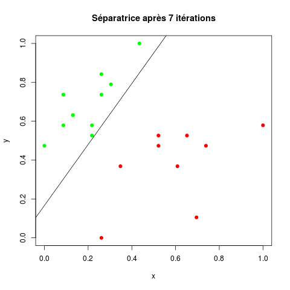

Ce TP consiste à implanter un perceptron en R et à faire quelques manipulations pour comprendre son fonctionnement.
On va implanter l'algorithme d'apprentissage des poids d'un perceptron et l'appliquer à un exemple simple.
On va utiliser le jeu d'exemples disponible ici (jeu1).
Ce jeu contient 19 exemples, 10 de classe -1 (classe négative) et 9 de classe 1 (classe positive). Chaque donnée est décrite par deux attributs numériques.
Puisqu'il y a deux attributs (notés x et y), le perceptron aura trois poids : un pour x, un pour y et un pour le biais.
Ces poids seront dans un vecteur w avec w [1] associé à l'attribut x, w [2] associé à l'attribut y et w [3] associé au biais.
La sortie du perceptron sera -1 ou 1. Celle-ci est obtenue en prenant le signe de : w [1] . x + w [2] . y + w [3]. Soit a un nombre, sign(a) vaut -1 si a est strictement négatif, +1 si a est strictement positif, nul si a est nul.
Le principe de l'apprentissage des poids est le suivant :
Les poids définissent une séparatrice dans le plan des données. Il est intéressant de suivre l'évolution de cette séparatrice au fil des itérations. Aussi est-il judicieux d'afficher à l'issue de chaque itération de la boucle tant-que les exemples et la séparatrice. Par exemple, on aurait la succession :
Quelques trucs pour que ça marche :
Implantez la règle d'apprentissage du perceptron sur ce jeu d'exemples comme cela vient d'être décrit.
À chaque itération du tant-que, comptez le nombre d'exemples mal prédits. Stockez ces décomptes dans une liste que vous pourrez afficher ensuite pour voir comment ce nombre d'erreur diminue au fil de l'apprentissage.
Utilisez maintenant le jeu de données construit par la suite de commandes R :
jeu <- iris [, 3:5] jeu [, 3] <- c (rep (-1, 50), rep (1, 100))
qui se trouve dans le data.frame jeu.
Maintenant, utilisez le jeu de données construit par la commande R :
jeu [, 3] <- c (rep (-1, 100), rep (1, 50))
qui se trouve donc dans le data.frame jeu.
Maintenant, utilisez le jeu de données construit par la commande R :
jeu [, 3] <- c (rep (1, 50), rep (-1, 50), rep (1, 50))
qui se trouve donc dans le data.frame jeu.